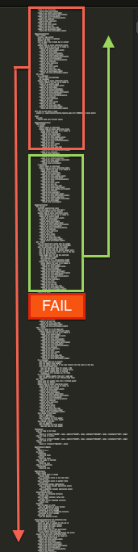
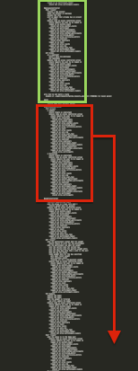

class: bottom, right, remark-slide-fullscreen, columned background-image: url(images/Lando_Calrissian.jpg) background-size: cover; # How to Fight Randos ## Eliminating Inconsistent Test Failures ## Austin Putman, @austinfrmboston<br>VP of Engineering, Omada Health ??? Welcome to my talk. This talk is about eliminating inconsistent failures in your tests, or as we call it on our team, "Fighting Randos". I'll introduce myself: I'm Austin Putman, VP of Engineering for Omada Health. We support people at risk of chronic diseases like diabetes to make lifestyle changes and have longer, healthier lives. It's pretty awesome and today I'm here to talk about our code. --- class: middle # Code is not random ??? # Code is not random That's kind of the point, right? For everyone who writes code, there was a moment of discovery where we learned that the computer could be made to do our bidding in a reliable way. As we grew more familiar with the machines, for every problem we encountered, there existed a logical explanation -- and learning it increased our mastery. --- class: middle # "The computer only does what we tell it" ??? # "The computer only does what we tell it" This basic proposition is the foundation of computer programming. It allows us to create automated systems that do the work of thousands of people with a precision not previously found in nature. --- class: middle # Life is random ??? # Life is random Stuff happens and then some other stuff happens in a way that is related to, but not necessarily causally linked to, what happened previously. I fell in the dunk tank at a party because I was crashing a wedding because the wedding I showed up for that night was boring. This doesn't happen to all bored people. In life, events have consequences that are impossible to foresee and untangle. The result is that we basically excuse causality from the room after one or two links in a chain of events. At that point, we start talking about luck. --- class: middle # Luck? ??? Yeah, luck. Like when you deliver a pizza in 2010 and some joker tips you with 10000 Bitcoins. Or when you run into an old friend and they offer you a dream job. You know who's got great luck? --- # Lando .center[] ??? Lando Calrissian. This guy is like Jean Valjean -- first he's a criminal, then he's a corporate titan, then he's a freedom fighter, then he's an action figure. --- # Not everyone can be Lando .center[] ??? You hope your test suite is like Lando. A trusted friend you can turn to when things get sticky. --- # Spoilers .center[] ??? For those of you who haven't seen Star Wars, I'll just say that Lando isn't always the most trustworthy guy. There are some things your test suite can do that aren't quite as bad as - freezing your team in carbonite and - turning them over to a brutal smuggling kingpin - shaped like an enormous mound of mashed potatoes but they're pretty close. --- # Scary story time .center[] ??? We've been going through a rough patch on our project where the build started failing randomly in crazy ways. The failures were unreproducible and difficult to investigate. The build began to feel like the weather in Scotland: sometimes stormy, sometimes foggy, but always a bit gloomy. Anywhere from 30-100% of our builds would fail on tests that would then be green when run individually or in the next build. This has a number of bad effects on a team. --- # Reduced trust .center[] ??? # Reduced trust When build failures happen 4-5 times per day, they stop being a red flag. Everyone on the team knows that the most likely explanation is a random failure. The default response to a build failure becomes to run the build again. --- class: remark-slide-fullscreen background-image: url(images/consistent_failures.jpg) # Missing actual failures ??? The obvious follow-on effect is that incorrect code that breaks things is not detected by CI. Sometimes other pairs would pull the code and notice failures. Sometimes the build stayed red for days, and only on the 3rd or 4th day would we notice the actual failures. This was bad. --- # QA and Acceptance blocked .center[] ??? Also bad. When CI passes, our system deploys to staging automatically. When CI doesn't work, stories can't be delivered and reviewed. This means that fast feedback loops become slow feedback loops, and reviewers get stories in giant clumps. That means less attention to detail on each delivered feature and *that*, folks, means crappier products. --- # Can't Ship .center[] ??? Sometimes a bugfix has to be moved into production quickly. Not to mention that features should go out twice a week. Frequent random failures add friction into this process. Sometimes code had to ship and we couldn't get a green build. In this case, we would re-run the failed tests on our local machines, then cross our fingers and ship. That's right. "Works on my machine" became policy. --- # TDDeath .center[] ??? At the most extreme, people lose interest in the build and eventually in the tests. This didn't happen to us, but when I have to explain to management that key features can't be shipped because of problems with the test server, it's ... uncomfortable. The test server is supposed to solve problems. --- <img src=images/IMG_0545.jpg align=right width=400> # Rando Backstabbian ??? It got so bad that we personified the idea of a random failure into Lando Calrissian's bizarro world double: Rando Backstabbian. --- class: middle # Rando has a posse .center[] ??? I started out by saying that code is not random. So how do tests, which are code, testing code, which is code, fail randomly? That shouldn't be possible. But there are some things we haven't been paying attention to. --- class: remark-slide-fullscreen background-image: url(images/NES-Table-1.jpg) ??? Who here had a console game system that took cartridges, like the original Nintendo? Good, so you remember having to occasionally blow on the cartridge to get the game to work, right? Not a problem with the code, but a problem with the device nonetheless. --- class: remark-slide-fullscreen background-image: url(images/2114286243_06445a8d8e.jpg) ??? What creates random behavior in code is changes in the environment that runs the code. Once you take into account the environment, code acts less like code and more like life. Which, as we know, is pretty random. --- # Inconsistent Inputs .center[] ??? Our code depends on fixtures and factories. The factories use randomly generated fake data to fill in names, zip codes, and text fields. This randomness can be good. It regularly exercises edge cases without engineers having to think of them. The code should work the same regardless of what zip code someone is in. But sometimes it doesn't. For example, did you know that Faker includes Guam and Puerto Rico in the states that it might generate for someone? And we don't include those in our states dropdown. So when a Cucumber test edits an account for a user that Faker has placed in Guam, their state is not entered. That leads to a validation failure. That leads to Cucumber not seeing the expected results. A test run with different fixtures will not reproduce the failure. We always rebuild our fixtures between test runs on CI. --- # Time.zone.now != Time.now # Time.zone.today != Date.today ??? Another input to your code is the current time. Our app sets itself to the user's time zone to present time-dependent data, like which week of our 16 week program you are on at 11:30pm on Saturday night. I found over 100 places where we neglected to use zone-aware time calls. Many of them were fine -- there's usually nothing wrong with epoch seconds. However, if your app cares about time zones, and since it only takes one misplaced call to Time.now to create a potential failure that you will never see on your location-aware laptop. It's best to just forget about Time.now and always use Time.zone.now. Same goes for Date.today. These methods create random failures because our fixtures put users into random time zones. --- # Rule #1 .center[] ??? # Rule One of fighting Rando is Always fix the inputs When you're trying to reproduce a random failure, you'll want to use the same fixtures that were used for the failing build. If you use factories and there's not a record, when a test has started to fail randomly you'll want to document the state at the time of failure. This could mean serializing the relevant models to a YAML file before you make your assertions, or dumping the entire database. Or you could just use fixtures. In any case, you'll need to reproduce the data to correctly reproduce the failure. --- # External Dependencies .center[] ??? Any time you depend on a third-party service in your tests, you introduce a possible random element. S3, Google Analytics, Facebook, -- any of these things can go down, be slow, or just break. Additionally, they all depend on the quality of your local Internet connection. --- # Rule #2 .center[] ??? # Rule Two of fighting Rando is Always fix the inputs API calls and responses are input for your code. They are critical to how the code works. We have to test them. Libraries like webmock and VCR allow us to replay canned responses to 3rd party services. They can also be used as a record of past responses so you can see how the response changed and what the response is that causes the error state. If you are trying to reproduce a failure in a test that has third party dependencies, you'll want to use webmock to capture and replay those API responses. --- class: center <img alt=social_empty src=images/no_social_here.png width=500> ??? In Cucumber tests, you'll want to remove Google analytics, like buttons, etc. These third party services can slow down page load time and create unnecessary failures. --- # The "external" build .center[] ??? The corollary to this is that you don't just want to test your code. You want to test the services your code depends on. So you need a build that does that. But it should not be in the main build. The purpose of the main build is to let the team know when their code is broken, and it should do that as quickly as possible. A separate, "external" build should test that interactions with third party services are still sane. --- # Test Harness Issues .center[] ??? Another source of random failures is due to threading issues with the test harness for full stack testing. The test harness is code, too, but it's multi-threaded, which means that execution order is non-deterministic. You may ask why this is, and I'll tell you, the answer is --- class: remark-slide-fullscreen background-image: url(images/reddwarfflare1.jpg) # Thermodynamics ??? Computers are made of silicon, and electrons which make up assembly instructions go through pieces of silicon at a certain rate, dependent upon: - the chemical process used to make the wafer - the exact hardware instruction set of your particular chip model - whether your OS is big-endian or little-endian - the ambient temperature in the room - and, very occasionally --- class: remark-slide-fullscreen background-image: url(images/2-21-13-Huge-Sunspot_full_600.jpg) # Sunspots! ??? I'm just kidding, thankfully Earth has an electromagnetic field so our CPUs do not get fried by cosmic rays. --- background-image: url(images/dollar_heads.jpg) # Distractions ??? Actually, probably more relevant to your thread timing than thermodynamics is that you have a giant beast of an operating system where you are checking facebook and running background jobs to mine bitcoins while your tests are running. --- # Race conditions .center[] ??? Due to all these environmental factors, your javascript running in Firefox may or may not complete its AJAX call and render the response before the test thread makes it assertions. Capybara tries to fix this by retrying assertions with a timeout, but it doesn't always work. Clicking a button to submit a form and then going to another page or refreshing the page might cut off the POST request, especially if it's an AJAX request. --- # AJAX ```ruby def wait_for_ajax_result wait_until(10) do page.evaluate_script('$.active') == 0 end end ``` Credit @mikegehard, @pivotallabs ??? You can fix this by adding an explicit wait into your cucumber steps when you need to rig the race. jQuery provides a handy counter of all the active xhr requests outstanding, so you don't have to break a sweat. --- # Database transactions .center[] ??? Very, very often, Rails programmers will say that the database doesn't matter. What they probably mean is that it doesn't matter as long as you use MySQL. We've had a lot of pain due to problems with database transactions. Early on our CTO wrote a mutex middleware for capybara to prevent overlapping requests. And this worked for a while. Recently we realized that we needed a similar middleware for Selenium. This also made a big difference. --- # Multithreaded blues .center[] ??? Postgresql has some pretty strong opinions about database connections and transactions. See, when you connect to a postgres database, you get a connection pool, not just one itty bitty connection. And when you use Jose Valim's ActiveRecord shared connection to share transactions between the test thread and the server thread -- well, you are stepping in to a world of database connection roulette. As the size of your test suite increases, the odds that *at some point* your server thread and test thread will grab hold of the same connection and send conflicting commands increases. When you add or alter data from the cucumber steps, you are betting that your server thread is using the same connection and thus has visibility into your transaction. --- # Lock it down ```ruby class ActiveRecord::Base mattr_accessor :shared_connection @@shared_connection = nil def self.connection @@shared_connection || ConnectionPool::Wrapper.new(:size => 1) { retrieve_connection } end end ActiveRecord::Base.shared_connection = ActiveRecord::Base.connection ``` Credit: @mperham ??? Fortunately, the Ruby community is getting slightly better at threading. Okay, really only Mike Perham and a few others have gotten better. But they make gists for the rest of us. Sidekiq also has this problem of sharing database connections. It is solved using the ConnectionPool gem. Now only one thread can access the shared database connection at a time. --- # But wait, there's more http://www.spacevatican.org/2012/8/18/threading-the-rat/ Credit: @fglc2 and @dressipi ??? There's a few more steps you'll want to explore to fully lock down your postgres database for Capybara. Luckily, someone did a terrific writeup of this. --- # Sad trombone ``` SAVEPOINT active_record_-1 PG::SyntaxError: ERROR: syntax error at or near "-" LINE 1: SAVEPOINT active_record_-1 ``` ??? Even after following all their suggestions, I still ended up with this error. So for now the http mutex middleware stays. --- # Rule #3 ??? # Rule Three of fighting Rando is Don't Give Up The solution that worked for @dressipi didn't work for our project. But if you keep working on your build, eventually you can figure out a combination of tactics that will lead to a stable, reliable build that earns the trust of your team. --- # Are We Done? .center[] ??? I want to talk about another reason that tests fail randomly. Rspec makes them fail randomly. That's right. Rspec runs all your tests in a random order, every time. The reason is to help you stay on top of test pollution. --- # Test Pollution .center[] ??? Test Pollution is when state that is changed in one test is not properly cleaned up and goes on to cause trouble with other tests. The state can live in memory, in the database, on the file system -- lots of places. By constantly changing the order of the tests, any state that is permanently changed that can cause test failures should stand out. But what if you ignore random test failures for a year or so? --- # Clues that I might have Test Pollution - the tests *never* fail when run in isolation - the failures have a consistent pattern of having different data than expected (vs throwing exceptions) - you haven't been checking for test pollution ??? (read slide) --- # Reproducing Builds That Fail from Test Pollution - Run the test suite in the same order - Copy the fixtures from the failed build - Don't forget the VCR cassettes ??? (read slide) --- # Reproducing Failed Builds: Identify the Random Seed ```rspec Failures: 1) Group#lesson_start 21 weeks from start should be in week 18 Failure/Error: group.week.should == 21 expected: 21 got: 20 (using ==) # ./spec/models/group_spec.rb:295:in `block (4 levels) in <top (required)>' 2) Group#lesson_start 5 weeks from start should be in week 5 Failure/Error: group.week.should == 5 expected: 5 got: 4 (using ==) # ./spec/models/group_spec.rb:271:in `block (4 levels) in <top (required)>' Finished in 8 minutes 1 second 4112 examples, 2 failures, 2 pending Failed examples: rspec ./spec/models/group_spec.rb:293 # Group#lesson_start 21 weeks from start should be in week 18 rspec ./spec/models/group_spec.rb:269 # Group#lesson_start 5 weeks from start should be in week 5 Randomized with seed 22164 ``` ??? So here's an example of a failed Rspec test. What is the value of the random seed? --- # Reproducing Failed Builds ## Modify your `.rspec` file ```ruby --colour --format documentation --seed 22164 ``` ??? Be sure to change the format to documentation as well as adding the seed. --- ## Rerun `rake spec` and verify you can get the same failure  ??? If you can achieve this, you are in great shape. Any problem that can be reliably reproduced can be solved. Well, it can be investigated. If you are unable to reproduce your failure this way it may not be test pollution. Or there is another aspect of your build environment that needs to be duplicated. --- class: remark-slide-fullscreen background-image: url(images/landokid.jpg) # Now how do I track down this Rando character? ??? Congratulations, you've got reproducibility! At this point, it is possible to start writing print statements or put a debugger breakpoint inside the offending test to learn more about the problem. In some cases, this may be sufficient to resolve the issue. You may be able to reset some initial state or set a value explicitly. In a complex codebase, though, it may not be clear how a value got out of whack, and if you only resolve it in the vulnerable test case, this pollution could affect future test cases and lead to sorrow. --- class: remark-slide-fullscreen background-image: url(images/star_wars_science.jpg) # You need science! ??? In a large codebase, you cannot just use the force of your amazing brain to sort out which of your 4000 tests is causing the trouble. Well, sometimes you can. I asked some folks about this and heard that 90% of the time it's the test *right before* the failing test that causes the problem. So be sure to check that one. --- # Slow Feedback: It hurts ??? Just running through the suite to reproduce the failure and get more data might take 10 minutes. For a programmer, waiting 10 minutes for feedback is terrible. All of the stack you’ve built up in your brain to solve this particular problem slowly disintegrates. You start working on other problems or check your facebook page while the tests are running. You lose your focus. That's how Rando wins. --- class: remark-slide-fullscreen background-image: url(images/ultralight_plane.jpg) # Faster feedback loops ??? There’s an apocryphal story about the development of ultralight airplanes. Early in the development of the ultralight industry, the planes were very rare, very expensive, and generally considered deathtraps. Each new model took months of planning to build, then it would be custom manufactured, and then test flights would occur, and then it would crash. The materials were delicate, and the crashes pretty much wrecked months of work. With the information gained from just a few tests, plane designers went back to the drawing board -- literally. It took a long time to make progress with this process. Eventually, one shop designed a plane from cheap, plentiful materials -- foam, steel wire, and tape. These planes could be repaired quickly with onsite materials, and sometimes multiple test flights would happen in an hour. Information gained from the last flight was able to be applied to the next iteration immediately. With this faster feedback loop, it was possible to make rapid leaps in design. All current ultralight planes are based on designs created in that shop. --- # Patience? I don't haz it ??? Rando has infinite patience -- you don’t. Don’t play Rando’s game -- first step: shorten feedback loops so your brain can think about the problem effectively. Fortunately, we can discard large amounts of complexity and noise by using a stupid process that we don't have to think about. --- class: remark-slide-fullscreen, center, middle background-image: url(images/Julia_Complexity.jpg) # Binary Search ??? Binary search is the process of looking for a needle in a haystack by cutting the haystack in half and then shoving each half-haystack into a very delicate balloon. It is possible to determine which half of the haystack the needle is in (of course it pops the balloon). Bu you're still left with a large pile of hay containing a unfound needle once the balloon has popped. So you divide the pile in half again and resume stuffing the hay into balloons. Let's bring this back to test pollution. Binary search requires us to remove large segments of the test suite to narrow in on the test that is causing the pollution. This creates a problem, because random ordering in the test suite changes when you remove tests. Yeah, that’s right -- there’s no way to effectively perform a binary search using a random seed. --- # SpecManualOrder Documentation comes out, documentation goes right back in  ??? Here’s the good news: it *is* possible to manually declare the ordering of your rspec tests, using an undocumented configuration option: `order_examples`. `config.order_examples` takes a block, which will be passed the collection of rspec examples after Rspec has loaded the specs to be run. Just reorder the examples in your preferred order and return that set from the block --- # Ordering 3000 specs - use `--format documentation` in your `.rspec` file - copy the output of `rake spec` into a file - add `SpecManualOrder.new("documentation_output.txt").order(config)` to your spec_helper file - rerun `rake spec` and verify the failure <div class="center-image">  </div> ??? But how do we find the exact order? Well, when we run rspec with the documentation format, it provides a sequential description of every example it runs. We can capture that data and use it to order the examples passed to the block. In Ruby, everything is an object -- this includes Rspec examples. Since they are objects, they have a description method. That can be matched to the output of the spec suite when run in documentation mode. With a pinch of string manipulation. (read slide) ---  # Binary Search, step 0 - Transplant half of the candidate test cases to the bottom of the ordering file - rerun `rake spec` to check if the failure occurs ---  # Binary Search, step 1 - This time transplant the other set of candidate cases - rerun `rake spec` to check if the failure occurs --- # Repeat using the failing set of cases ## Until you have only the culprit case remaining <div class="center-image">  </div> --- class: center # Now that you've simplified the problem  --- class: remark-slide-fullscreen, center background-image: url(images/Puzzle2.jpg) # Time to solve the puzzle! ??? Experiment with commenting out lines in the causal case to determine what affects the vulnerable case. Once you’ve determined the culprit line in the test suite, experiment with commenting out lines of code that are exercised by that line. Once you’ve isolated the problem to 2 or 3 lines of code, you’ve put monkey brain in a position to shine against your random failure! Now is the time to use your neurons as powerful pattern recognition engines. Given this new context, solving the problem should be much easier. --- # Play along at home ```bash git co 1843605900 cd .. && cd - bundle ``` - in .rspec ```ruby --format documentation --seed 22164 ``` ```bash rake db:drop db:setup db:test:prepare be rake spec:fixture_builder:rebuild ``` - Review accounts.yml. (Remember, the fixture data matters) - The `complete` account should have a timezone of Central or Eastern, not Pacific. - You can edit it in the file or keep rebuilding the fixtures until you get the value you want. ??? This is a pretty complex operation, slightly more complicated than going down stairs in case of fire, so it may be useful to practice it. In this presentation I’m including the free play-along-at-home game where you can check out your own copy of kairos on a troubled commit, as well as the essential random seed that causes issues in some cases. --- # Play along at home ```bash be rake spec ``` - wait patiently - You should see: <div class="center-image">  </div> --- # Play along at home - Copy terminal log into a file “test1.txt” and clean it up (phantomjs messages, git pull noise, INFO noise) ```bash git co master spec/support/spec_manual_order.rb ``` - In spec_helper: ```ruby SpecManualOrder.new("test1.txt").order(config) ``` ```bash be rake spec ``` - Verify problem still happens - Proceed to resolve the issue through science <div class="center-image">  </div> --- class: center, middle # Thank You! @austinfrmboston @omadahealth .bottom.right.credits[ Photo Credits: [634778544](http://www.flickr.com/photos/frosted_peppercorn/634778544) ]